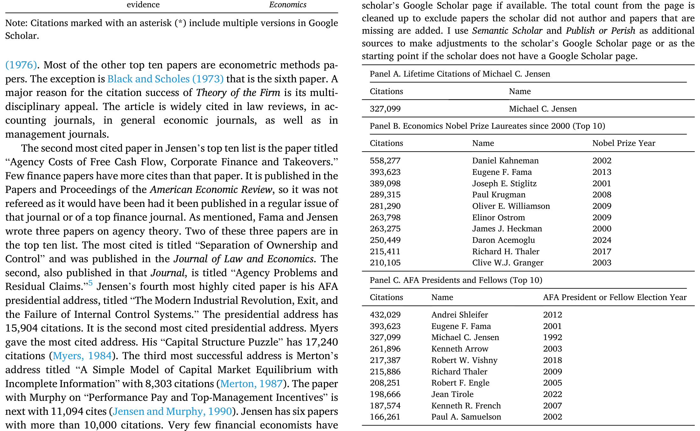
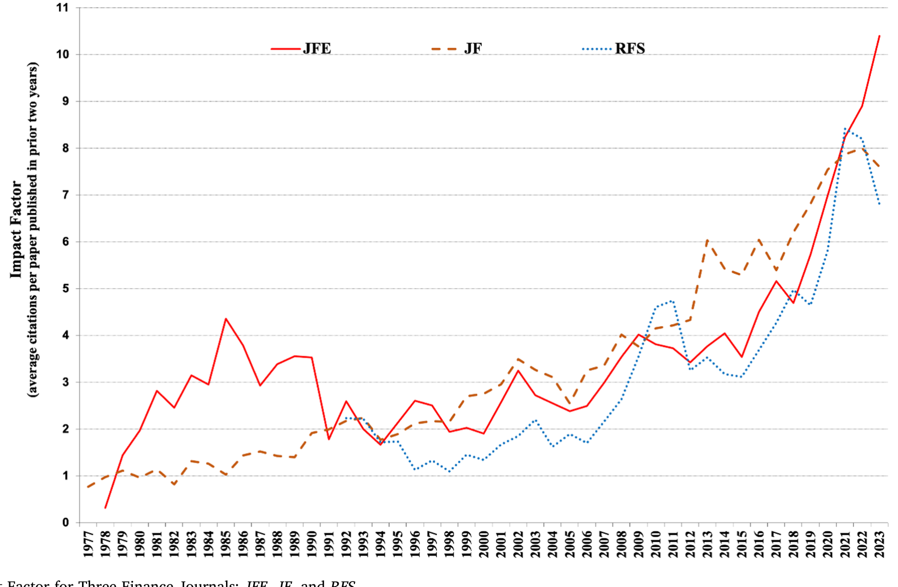
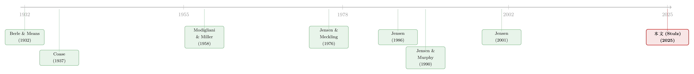

用引用数丈量一生：詹森留给金融学的几堂课
本文读的是 Stulz (2025, Journal of Financial Economics)：作者用詹森（Michael C. Jensen）自己最信奉的尺子——引用数——来丈量他的一生。结论是，在金融经济学的「开国元勋」里，詹森的被引量仅次于自己的导师 Fama，他还写出了全领域被引最高的那篇论文（Jensen and Meckling, 1976，138,678 次 Google 引用）。而本文真正想替詹森辩护的，是另一桩公案：很多人说他晚年「悔悟」、否定了自己早年的思想；作者逐条反驳——他从未 recant，只是把同一个核心想法想得更深了。
1 一个没拿到诺奖的「开国元勋」
先抛一个让人有点不舒服的事实。
从上世纪五十年代到七十年代中期，有那么一小撮学者，几乎从无到有地搭起了一门新学科——金融经济学（financial economics）。这群人后来大多被诺贝尔奖加冕：Markowitz、Sharpe、Miller、Merton、Scholes、Fama……名单可以一直列下去。可偏偏其中一位，论被引量在所有「开国元勋」里排第二（仅次于他的导师 Fama），论单篇影响力更是写出了整个领域被引最高的那篇论文，却始终与诺奖无缘。
他就是迈克尔·詹森。
这就是 Stulz 这篇文章的张力所在。它不是一篇标准的实证论文，没有双重差分、没有工具变量，它是一篇「评传」——但作者偏偏选了一个非常「詹森式」的角度来写：用可度量的指标去回答「他到底有多重要」这个问题。这一点本身就极有意味，因为詹森毕生最执拗的一个信念，恰恰就是：成功必须能被度量，否则就是空谈。他常问的一句话是：「How do we know how well we have done?」（我们怎么知道自己做得好不好？）（关于詹森其人其事，本博客此前也写过一篇纪念文章，可参见《送别迈克尔·詹森：一个相信市场、却毕生研究市场失灵的人》。）
于是文章的第一招，就是把詹森自己的尺子，反过来量在他自己身上。
2 用他自己的尺子量他自己
詹森认定的尺子，是引用数（citations）。
这把尺子的来历也很「金融经济学」。Merton 告诉詹森，有个叫 Eugene Garfield 的人在 1972 年建立了社会科学引文索引（Social Science Citation Index, SSCI）——而这比 JFE 创刊还早两年。詹森立刻意识到这东西的价值：它能用来指导编辑政策，也能用来衡量一本期刊、一篇论文是否真的「impactful」。
当然，同行没少质疑这把尺子：被引多不等于被读得多；一篇错的论文也可以被引很多次；综述类文章天然引用高；不同子领域的引用习惯差异巨大（治理领域的顶刊文章，被引天然就比微观结构的高）。这些 caveat 都对。但 Stulz 借詹森的口反问：那替代方案是什么呢？同行常说引用衡量不了「质量」——可质量若不是影响力，又是什么？一篇被奉为 tour-de-force、却没人引用的「完美论文」，真的改变了世界吗？
这里有个容易被忽略的细节：詹森不是在自己成为「引用大赢家」之后才开始鼓吹引用的。Stulz 特别指出，他一生都在主张引用是恰当的度量——这让他的立场少了几分「事后自利」的嫌疑。
接着，文章沿用 Schwert and Stulz (2017) 给 Fama 做影响力评估时的同一套方法（主要用 Google Scholar，辅以 Semantic Scholar、Publish or Perish 做清洗与补全），把数字摆了出来。
詹森被引最高的十篇论文里，《企业理论》（Theory of the Firm，即 Jensen and Meckling, 1976）以 138,678 次高居榜首。这个数字有多夸张？2000–2024 年间的 53 位经济学诺奖得主里，只有 13 人的「终生」被引总量超过这一篇论文；在 74 位 AFA Fellow 里，也只有 12 人的终生被引超过它。而且它远未「过气」——这篇 1976 年的论文，单年被引最高出现在 2022 年（9,361 次），2019–2023 年每年都被引超过 8,000 次。
其余还有：《自由现金流的代理成本》（Jensen, 1986）41,414 次、Fama-Jensen (1983) 的《所有权与控制权的分离》35,400 次、1993 年 AFA 主席演讲 15,904 次、Jensen and Murphy (1990) 11,094 次。詹森一个人就有 6 篇论文被引超过一万次——以「万次引用论文」的篇数排名，他在金融经济学家中排第三，仅次于 Fama（8 篇）和 Shleifer（7 篇）。
然后是终生被引的横向对标。詹森个人终生被引 327,099 次。把他放进两个基准组里看：

Table 2
如表 2 所示，在 2000 年以来的诺奖得主里，只有 Kahneman（558,277）、Fama（393,623）、Stiglitz（389,098）三人超过他；在 AFA Fellow 里，他排第三，前两位是 Shleifer（432,029）和 Fama（393,623），而 AFA Fellow 的平均被引是 83,161、中位数是 59,334。换句话说，无论拿哪个基准，詹森都牢牢站在分布的极右尾。
数字摆完，故事其实才刚开始。因为引用只回答了「他有多重要」，没回答「他到底说了什么、为什么重要」。
3 一个核心：代理成本
如果要把詹森一生的思想压缩成一句话，那就是——利益冲突是有成本的，而公司金融的政策，正是用来管理这些成本的工具。
Stulz 把这条主线讲得很清楚。一切的起点是一个朴素到近乎常识的观察：个体都在追求自己的目标，而一个组织里不同成员的目标极少彼此对齐。经理与股东之间、股东与债权人之间，利益并不一致；这些不一致会给组织带来成本。詹森和 Meckling 用「代理成本」（agency costs）这个词，给这类「利益冲突的成本」起了名字。
这就是 1976 年那篇《企业理论》的分量所在。在弗里德曼意义上的「实证经济学」（positive economics, Friedman, 1953）框架下，它做了一件此前的理论做不到的事：解释了为什么即便没有公司税，最优负债水平也依然存在。
这一点值得停下来体会。在詹森之前，解释「为什么公司要借债」的主流是权衡理论（tradeoff theory）——拿债务的税盾去权衡财务困境的成本。可一旦把公司税拿掉，税盾消失，权衡理论就解释不了企业为何还要负债。詹森的答案是：债务本身就是一种治理工具。它和「让经理持股」一道，构成了《企业理论》压制代理成本的两支箭。
那么问题来了——债务为什么能治代理成本？
这就引出了詹森后来最有名的一击：自由现金流的代理成本（agency costs of free cash flow, Jensen, 1986）。很多公司有一头「现金奶牛」（cash cow），源源不断地产生现金。经理可以把这些现金挥霍在低效的用途上，却几乎不必担心公司因此倒闭。怎么逼他们把自由现金流吐出来？詹森的药方是：让他们背上大量债务，于是现金必须拿去还本付息，没有余地浪费。这也正是他为何要在杠杆收购（leveraged buyouts）和私募股权遭受围攻的年代，公开为它们辩护——高杠杆既锁死了经理乱花钱的空间，又让股权集中、便于监督。（关于「自由现金流到底被花到哪里去了」这个詹森式问题的当代实证回响，可参见《一万七千亿美元的「自由现金」，被花到哪里去了？》。）
而《企业理论》的第二支箭——让经理的激励与股东对齐——则在 Jensen and Murphy (1990) 里被推到极致。那篇论文的著名论断是：CEO 被像「官僚」（bureaucrats）一样支付薪酬，而不该如此；他们的报酬应当与其对股东财富的影响挂钩。
你看，从 1976 到 1986 再到 1990，表面上是三个不同的题目（资本结构、现金流、薪酬），骨子里却是同一个核心在反复展开：怎样用财务安排，把那些目标不一致的人，约束到「为股东创造价值」这件事上来。这也是詹森留给公司金融最重要的一课——公司财务政策不是配角、不是 side-show，它直接决定了企业的生产率。
4 詹森其实根植于资产定价
讲到这里，需要补一笔容易被忽略的前史：在成为「公司金融的詹森」之前，詹森是个不折不扣的资产定价学者。
他的博士论文催生了后来以他名字命名的「詹森阿尔法」（Jensen's alpha）——一种衡量基金风险调整后业绩的方法。用今天的话说，它就是市场模型回归里那个截距项：
$$ R_{it} - R_{ft} = \alpha_i + \beta_i\,(R_{mt} - R_{ft}) + \varepsilon_{it} $$
这里 \(R_{it}-R_{ft}\) 是基金 \(i\) 的超额收益，\(R_{mt}-R_{ft}\) 是市场超额收益，斜率 \(\beta_i\) 度量系统性风险暴露，而截距 \(\alpha_i\) 就是「詹森阿尔法」：在剥离了承担市场风险该得的那部分回报之后，基金还剩下多少「真本事」。Jensen (1968) 用一百多只基金做了估计，结论冷峻——平均而言看不到正的阿尔法，也没有令人信服的证据表明存在能持续战胜市场的个别基金。这是支持市场有效性（market efficiency）的早期重磅证据。
更重要的是另一篇：Fama, Fisher, Jensen and Roll (1969)。这篇论文引入了事件研究法（event study method）。Stulz 提醒我们，正是这套方法，后来成了衡量「公司行为如何影响股东财富」的主力工具——而「股东财富」恰恰是詹森衡量公司行为成败的唯一标尺。换句话说，他早年在资产定价里磨出来的方法论，反过来成了他后半生公司金融研究的脚手架。
这条暗线很关键：詹森不是凭空跳进代理理论的，他是带着「可度量、看证据、信市场」的整套方法论走进去的。
5 反转：他到底有没有「悔悟」？
现在，故事迎来真正的反转。
詹森一生争议缠身。《纽约时报》在他去世后的讣闻标题，一面承认他「helped reshape modern capitalism」（重塑了现代资本主义），一面又把「贪婪即美德的年代」（the greed-is-good era）算到他头上。更有人——比如 Wooldridge (2024)——先称他是「拿了博士学位的 Gekko」（电影《华尔街》里那个贪婪的投机客），再说他在九十年代末「经历了一场宗教般的皈依」，开始谈论所谓「开明的价值最大化」（enlightened value maximization），仿佛在悔过、在收回早年的主张。还有人说这个新概念「与 ESG 有惊人的相似」（Smith, 2024）。
于是「詹森晚年 recant（悔悟、否认前说）了吗」成了一桩公案。Stulz 的回答非常干脆：没有。他承认詹森确实会改主意——詹森在乎真理胜过在乎前后一致，一旦有新事实、新论证说服他，他就改。但「改主意」和「否定自己的核心思想」是两码事。
关键在于怎么理解「开明的价值最大化」。詹森的原话是：价值最大化「不是一个愿景、一个战略，甚至不是一个目的，它是组织的记分牌（scorecard）」。读懂这句话，整个「悔悟说」就站不住了——
詹森从没说「别再追求价值最大化了」。他说的是：光喊「我要最大化公司价值」没用，因为价值最大化只是「记分牌」，不是「打法」。要真的赢下这场比赛，经理必须拿出一个愿景、一套战略，朝着它去努力，结果才会体现为高企业价值。这不是对早年思想的否定，而是对「如何真正实现价值最大化」这件事的深化。
换句话说，那个被一些人解读为「向 ESG 投降」的晚年詹森，骨子里还是 1976 年那个詹森：他依然认定股东价值是终极记分牌，只不过他越来越关心「怎样把分打高」这个操作层面的问题——这恰恰是「实证」而非「规范」的追问。Stulz 这一辩护，是全文的落点，也是它区别于一般「盖棺论定」式评传的地方。
6 不只写论文：JFE 与 SSRN
詹森还懂一件很多学者不懂的事：光有好想法不够，还得改变想法的传播方式。
当他发现既有期刊对「现代金融」不够友好，他干脆和 Merton、Fama 一起创办了《金融经济学杂志》（JFE）。作为编辑，他把「鼓励他认为重要的研究」视为己任。后来万维网出现，他立刻嗅到机会，和 Wayne Marr 一起搞出了社会科学研究网络（Social Science Research Network, SSRN）——这彻底改变了金融经济学的传播：全世界任何人都能上传、即时获取最新工作论文，「思想的市场」第一次真正全球化、即时化。今天 SSRN 上已有超过 100 万篇论文、被下载逾 2 亿次，并于 2016 年被 Elsevier 收购。

Figure 1: Impact Factor for Three Finance Journals: JFE, JF, and RFS
如图 1 所示，文章用 JFE、JF、RFS 三大金融期刊的影响因子（impact factor）变化，从侧面印证了詹森一手创办的 JFE 如何长成了领域里举足轻重的力量。当然，Stulz 也不无遗憾地指出，SSRN 并没有完全兑现当初的期待——人们曾希望它能孕育出「众包式审稿」、削弱期刊的重要性，但事与愿违：顶刊发表反而成了全世界学者拿到终身教职近乎唯一的通道。借用 Peter Thiel 那句关于互联网的名言——「我们想要会飞的汽车，结果只得到了 140 个字符。」
7 文献脉络
把詹森放回学科史里看，这条线索其实很清晰。
最早，是 Berle and Means (1932) 提出「所有权与控制权分离」的古典命题，和 Coase (1937) 追问「企业为什么存在」。接着是金融理论的奠基：Markowitz (1952) 的组合选择、Modigliani and Miller (1958) 的资本结构无关性、以及 Sharpe (1964)、Lintner (1965) 们搭起的 CAPM。这些工作回答了「价格如何决定」，却基本把公司内部当成一个黑箱。
然后，一个自然的问题浮现了：如果经理和股东的目标并不一致，MM 那个「无摩擦」的世界还成立吗？Alchian and Demsetz (1972) 从团队生产的角度、Ross (1973) 从委托代理的角度，开始撬动这个黑箱。而真正把它砸开、并给出一整套语言的，是 Jensen and Meckling (1976)。此后，詹森沿着这条线一路推进：Fama and Jensen (1983) 把视野从「股东所有的公司」扩展到更一般的组织形式，Jensen (1986) 锁定自由现金流，Jensen and Murphy (1990) 处理高管激励，Jensen (1993) 的主席演讲则警示「衰退中的行业尤其容易滋生代理成本」。到 Jensen (2001) 的「价值最大化」，是这条线的延伸，而非断裂。

Stulz 这篇 2025 年的文章，站在这条脉络的终点，做的是一件「回望」的事：用引用数确认詹森的位置，用文本细读为他的「晚年转向」正名。它和同一期 JFE 里 Fama and French (2025)、Bolton (2025)、DeAngelo, Kahle and Skinner (2025) 等纪念文章一道，构成了对詹森的集体盘点。
8 评论与延伸（Q&A + 研究方向）
(a) 几个可能的疑问
Q：用 Google Scholar 引用数来排名，靠谱吗？会不会把詹森抬高了？
作者自己很清楚这把尺子的毛病，并明确承认：Google Scholar 会把工作论文和未被 SSCI 收录的期刊也算进去，因此数值系统性地高于 SSCI。他选 Google Scholar 的理由是「两套排名高度相关，但前者好取得」，并用 Semantic Scholar、Publish or Perish 做了清洗（比如把不属于本人的论文剔除、把漏掉的补回）。所以这是一个「排名稳健、绝对值偏高」的度量——比较相对位置可信，纠结绝对数字意义不大。
Q：被引第二、单篇第一，却没拿诺奖，这说明引用和诺奖是两套逻辑吗？
多半是的。诺奖偏好「可清晰归因的单点理论突破」，而詹森的影响力是「跨学科的弥散式」——《企业理论》被法学评论、会计、一般经济学、管理学大量引用，正是这种跨界让它被引爆表，却也让它难以被装进某个单一的「诺奖式」叙事里。文章其实暗示：用引用这把尺子，詹森一点都不吃亏。
Q：「开明的价值最大化」和 ESG / 利益相关者理论到底是不是一回事？
按本文的读法，不是。詹森始终把股东价值当作终极「记分牌」，只是强调要实现它必须先有愿景与战略；而利益相关者理论（stakeholder theory）是要把目标函数本身改写成多目标。把前者等同于 ESG，是把「实现手段」误读成了「目标替换」。
Q：詹森为高管高薪、为杠杆收购辩护，这不正是「greed-is-good」吗？
文章给的逻辑是：詹森辩护的不是「贪婪」，而是「约束」。高杠杆之所以好，是因为它锁死了经理浪费自由现金流的空间、逼出对债务的偿付纪律；高管持股之所以好，是因为它把激励对齐到股东财富上。这是「用制度压制代理成本」的逻辑，而非「鼓励贪婪」的逻辑。当然，这套逻辑是否在现实中总能成立，是另一个实证问题。
Q：詹森 1968 年说基金没有正阿尔法，这和他后来研究公司治理有什么关系？
关系很深。早年的资产定价工作给了他两样东西：一是「相信市场、用证据说话」的方法论底色，二是事件研究法这套衡量「公司行为→股东财富」的工具。可以说，是资产定价的训练塑造了他做公司金融的方式——他始终把股东财富当作可度量的成败标准。
Q：SSRN「没达到预期」，具体指什么？
指它没能催生出「众包审稿」、也没能削弱期刊的重要性。恰恰相反，顶刊发表变得比以往更关键——成了全球学者拿终身教职的近乎唯一通道。SSRN 极大地加速了「传播」，却没有改变「评价」的权力结构。
(b) 几个可能的研究问题与提案
1. 自由现金流的代理成本，在「外资持有人」身上还成立吗？ - 【经济故事】詹森说高自由现金流会被经理浪费，而债务能约束之。但如果公司的大股东是治理能力强、跨境监督的外资机构，是否会替代债务的约束作用，从而削弱「自由现金流—过度投资」的链条？ - 【可行性】中。需要 FactSet/Refinitiv 的机构持股数据 + 公司财务数据，识别上可借「指数纳入」带来的被动外资变动做工具变量。难点是把「外资治理」与「外资偏好优质公司」分开。
2. 杠杆作为治理工具：在公司债市场能「读」出来吗？ - 【经济故事】若高杠杆真的压制了自由现金流的代理成本，那么债权人应当能感知到这种「纪律红利」，并反映在信用利差里——即在某些高自由现金流公司，增加杠杆未必单调推高利差。 - 【可行性】中。需要 TRACE 债券交易数据 + 公司自由现金流分组，做利差对杠杆的非线性回归。挑战在于把「纪律效应」与「违约风险上升」这两个方向相反的力量识别开。
3. 「引用即影响力」这把尺子，对债券市场研究公平吗？ - 【经济故事】詹森坚信引用衡量影响力，但他自己也承认不同子领域引用习惯差异巨大。公司债/信用市场是否系统性地「被引偏低」？若是，这种学科内的「计量偏差」是否影响了人才流向与终身教职评定？ - 【可行性】高。纯文献计量研究，用 Web of Science / Google Scholar 的子领域引用分布即可做，识别上可比较同等质量（如同期同刊）论文的跨子领域引用差异。doable，且有现实意义。
4. SSRN 工作论文的「下载—引用」转化，是否偏袒了已成名学者？ - 【经济故事】SSRN 让「思想市场」全球化，但若注意力高度集中在大牌作者身上，它可能反而加剧了马太效应，与詹森「让好想法被看见」的初衷相悖。 - 【可行性】中。需要 SSRN 的下载与后续发表/引用数据（部分可得），识别可用作者首篇论文前后的曝光变化。难点是数据获取与「质量 vs. 名气」的分离。
9 我的判断
这篇文章的贡献，不在于发现了什么新事实，而在于它用一种近乎「以子之矛攻子之盾」的优雅方式，完成了对詹森的盖棺——用詹森最信的尺子量詹森，再用詹森的原话替詹森辩护。它最有价值的部分，是对「悔悟说」的逐条反驳：把「价值最大化是记分牌、不是打法」这句话讲透之后，所谓「晚年皈依」的叙事就显得相当单薄了。这是一次有说服力的文本辩护。
但要诚实地说，这毕竟是一篇带着深厚私人情谊与学派立场的评传，不是中立的因果研究。它的「识别」隐患是显而易见的：作者本人是詹森思想谱系里的人（Stulz 自己关于经理自由裁量权与最优融资政策的工作，Stulz, 1990，正是这条线的延伸），致谢名单里坐着 Fama、French、Jensen 的家人。用引用数论证「重要性」固然客观，但「他没有 recant」这个判断，本质上是一种文本解读，解读者并非旁观者。一个对詹森持批评态度的读者，完全可能从同样的原话里读出不同的味道。文章承认了引用度量的种种 caveat，却没有用同等的力度去审视自己解读「悔悟说」时可能的立场偏差。
我接下来想看到的，是把这种「评传式」判断做成可证伪的实证：比如，系统性地编码詹森不同时期文本里「股东价值」与「利益相关者」措辞的权重变化，用文本分析量化「他到底变了多少」，而不是停留在引述与辩护。毕竟，这才是最「詹森」的做法——别只是说他没变，把它度量出来。
参考文献
- Alchian, A.A., Demsetz, H. (1972). Production, information costs, and economic organization. American Economic Review 62(5), 777–795.
- Berle, A.A., Means, G.C. (1932). The Modern Corporation and Private Property. New York: Macmillan.
- Bolton, P. (2025). Jensen and Meckling at 50. Journal of Financial Economics, this issue.
- Coase, R.H. (1937). The nature of the firm. Economica 4, 386–405.
- DeAngelo, H., Kahle, K., Skinner, D.J. (2025). Agency costs of free cash flow, capital allocation, and payouts. Journal of Financial Economics, this issue.
- Fama, E.F., Fisher, L., Jensen, M.C., Roll, R. (1969). The adjustment of stock prices to new information. International Economic Review 10(1), 1–21.
- Fama, E.F., French, K.R. (2025). Michael Jensen's empirical work. Journal of Financial Economics, this issue.
- Fama, E.F., Jensen, M.C. (1983). Separation of ownership and control. Journal of Law and Economics 26(2), 301–325.
- Friedman, M. (1953). Essays in Positive Economics. Chicago: University of Chicago Press.
- Jensen, M.C. (1968). The performance of mutual funds in the period 1945–1964. Journal of Finance 23(2), 389–416.
- Jensen, M.C. (1986). Agency costs of free cash flow, corporate finance, and takeovers. American Economic Review 76(2), 323–329.
- Jensen, M.C. (1993). The modern industrial revolution, exit, and the failure of internal control systems. Journal of Finance 48(3), 831–880.
- Jensen, M.C. (2001). Value maximization, stakeholder theory, and the corporate objective function. Journal of Applied Corporate Finance 14(3), 8–21.
- Jensen, M.C., Meckling, W.H. (1976). Theory of the firm: Managerial behavior, agency costs and ownership structure. Journal of Financial Economics 3(4), 305–360.
- Jensen, M.C., Murphy, K.J. (1990). Performance pay and top-management incentives. Journal of Political Economy 98(2), 225–264.
- Kim, E.H., Morse, A., Zingales, L. (2006). What has mattered to economics since 1970. Journal of Economic Perspectives 20(4), 189–202.
- Markowitz, H. (1952). Portfolio selection. Journal of Finance 7(1), 77–91.
- Modigliani, F., Miller, M.H. (1958). The cost of capital, corporation finance and the theory of investment. American Economic Review 48(3), 261–297.
- Myers, S.C. (1984). The capital structure puzzle. Journal of Finance 39, 574–592.
- Ross, S.A. (1973). The economic theory of agency: The principal's problem. American Economic Review 63(2), 134–139.
- Schwert, G.W., Stulz, R.M. (2017). Gene Fama's Impact. In Cochrane, J.H., Moskowitz, T.J. (Eds.), The Fama Portfolio: Selected Papers of Eugene F. Fama. University of Chicago Press.
- Smith, C.W. (2024). Michael C. Jensen: Scholar, mentor, colleague. Journal of Applied Corporate Finance 36, 9–15.
- Stulz, R.M. (1990). Managerial discretion and optimal financing policies. Journal of Financial Economics 26(1), 3–27.